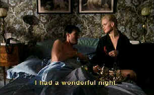

| 4th
Man, The (SE)/ A-,A- |
| Anchor Bay/1979/102/ANA 1.66 |
Paul Verhoeven has been directing
near the edge for many years. The 4th Man features the director in his most brilliant
mode, weaving a black widow thriller/mystery/horror film with magnificent strokes of color and
sensual and mysterious surreal imagery. Don't let the subtitles discourage an exciting appointment
with The 4th Man.
|
 |
| You'll have a wonderful night too! ©Anchor
Bay |
Typical of
Verhoeven, The 4th Man is sexually bold and uninhibited. Snatches of sex frontal nudity
are liberally sprinkled through the film regardless of sex. Sex is part and parcel of the
story, however. Gerard Reve is a writer with a vivid imagination, a sexual appetite partial to
hard body men, and a spotty career marked by some critical esteem and little financial success. A
short trip to talk before a literary society turns into a rather more prolonged stay. Reve meets
sex hungry Christine, a liberated blonde advertising her sexual attributes in a ravishing red
dress. Blood red runs throughout the surreal images. Reve had better beware.
A night with a pretty
blonde isn’t the worst scenario, even for a guy with an eye for men. Reve is bold enough to
overtly ogle Christine as if she were a young boy. The plot is complicated by Reve’s man hunger
and Christine’s man hunger. Beautifully filmed by cinematographer Jan De Bont, the bold splashes
of color and unusual camera angles emphasize the deadly thriller with sparkling illumination. The
script is a delicious adaptation of a novel by Verhoeven collaborator Gerard Soeteman. The
perversion is played out in evil rhythms.
Jeroen Krabbé leers provocatively in the role of Reve. Whether haunted by
violent and mysterious images or plotting to bed a boy, Krabbe is never less than riveting in his
performance. The lady in red is etched in poison by fabulous looking Renée Soutendijk. Her
Christine is a step ahead of Reve at every curve.
Anchor Bay delivers The 4th Man with blood fully saturated in the transfer. It’s quite beautiful.
Splashes of red appear with sudden and rich ferocity. Color is consistently stable and confined
within in outlines. Fleshtones are natural and blacks are deep and velvety. Contrast range is
excellent illuminating varied interiors and exteriors in perfect balance. The image is quite sharp
and unenhanced. There's little or no noise in the transfer. Optional yellow English subtitles are
easy to read and follow the action splendidly. The mono soundtrack is clean and free of hiss or
distortion.
As a bonus, Anchor Bay includes an audio commentary from director Verhoeven
which adds outstanding illumination to the film.
The perversity may not be everyone’s
cup of tea, but it is perfectly brewed.
|
|
|
|

Not
One Less
 In a remote
Chinese village a 13 year old Chinese girl takes determination to the limits. From master filmmaker
Zhang Yimou. In a remote
Chinese village a 13 year old Chinese girl takes determination to the limits. From master filmmaker
Zhang Yimou.

The
Movie Poster Archive includes extensive poster images from the films of stars like Susan Hayward,
Kirk Douglas, Katharine Hepburn and many more. Our featured star is Richard Widmark.

 Gary Morris's insightful publication Bright Lights
Film Journal turns the celluloid in films from a unique perspective. Click on the image above
for more pure movie views. Gary Morris's insightful publication Bright Lights
Film Journal turns the celluloid in films from a unique perspective. Click on the image above
for more pure movie views.
A love of movies drives this small DVD production
company, Synapse Films. Currently
specializing in horror and cult films. Watch for new DVD releases of film festival independents as
Synapse branches out.

DiscReviews.com
is a new DVD review site
with a slick interface.

Comprehensive DVD review database. Easy to use
interface with specific region searches.
Imaging Science Foundation
The Imaging Science Foundation promotes proper standards in home theater viewing. ISF trained
technicians offer monitor calibration services to consumers. The difference in a properly
calibrated monitor can be astounding. Click on the image to find an ISF member near you.
|